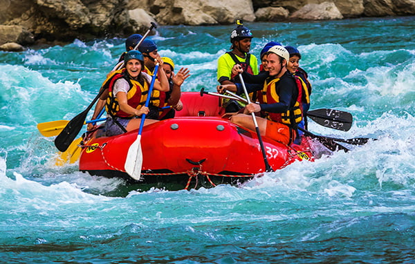
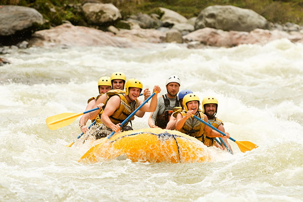
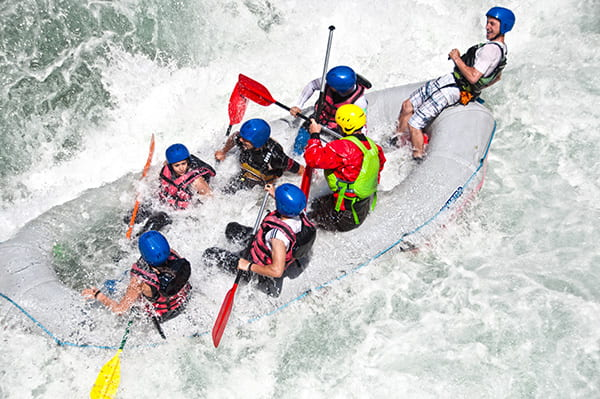
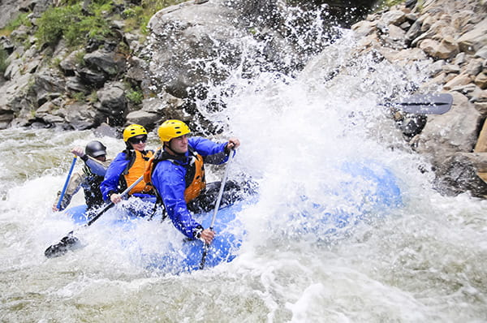
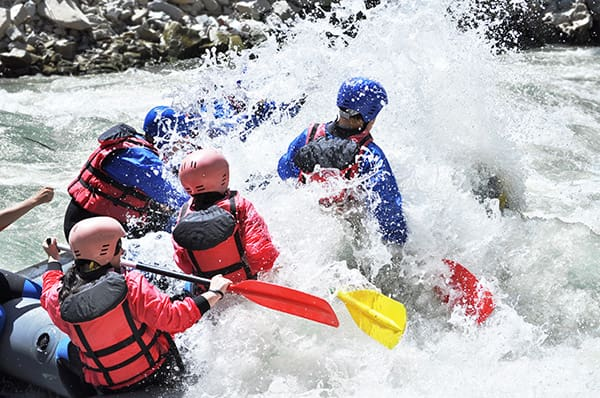

Galera, equipe super profissional, animada, experiente… O atendimento foi excepcional desde o início, nos auxiliaram em tudo. Eles entregam exatamente o que divulgam , só que com mais emoção! Super indico!

Galera, equipe super profissional, animada, experiente… O atendimento foi excepcional desde o início, nos auxiliaram em tudo. Eles entregam exatamente o que divulgam , só que com mais emoção! Super indico!
Fundada em 2010 por Ângelo Barbosa, conhecido como Angeloto, a Expedição das Águas foi uma das pioneiras no rafting no Brasil.

Desde o início, a empresa se destacou nas corredeiras do Rio Paraibuna e nas expedições pelos rios do Brasil, sempre priorizando segurança e conexão com a natureza.




